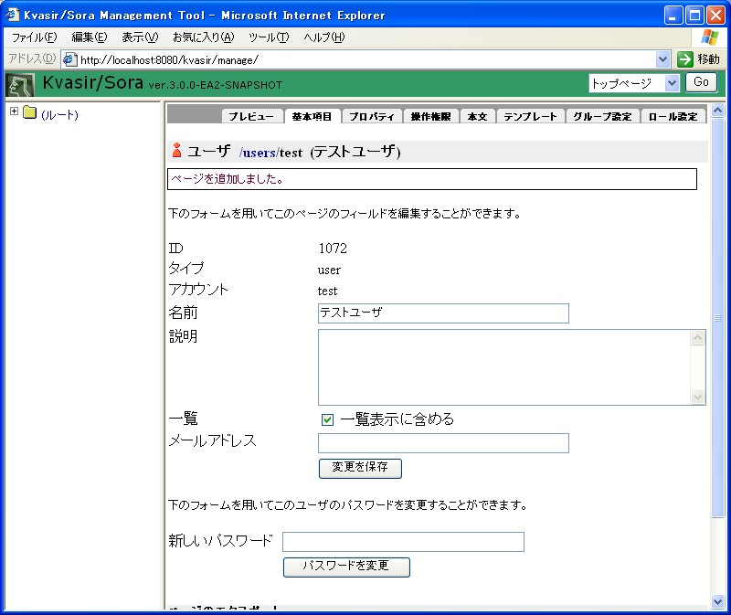
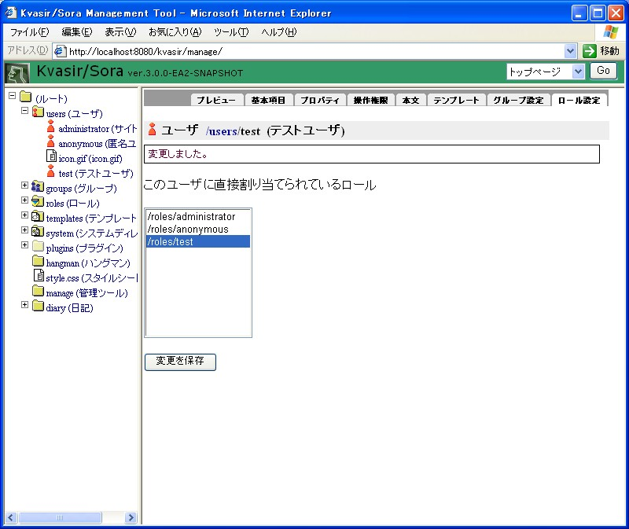

Kvasir/Sora CMSはKvasir/Sora Base上に構築された、拡張性の高いコンテンツ管理システムです（以下、混乱の恐れがない場合はKvasir/Sora CMSを単にKvasir/Soraと記述します）。この文書では、Kvasir/Soraを使ってオリジナルのWebサイトを構築する方法を説明します。
インストール
インストールの方法についてはインストールを参照して下さい。以下、サイトトップのURLをhttp://localhost:8080/kvasirとして説明します。
基礎知識
Pageオブジェクト
Kvasir/SoraではWebサイトが持つコンテンツツリーの各コンテンツと対応するように内部にPageオブジェクトのツリーを持っています。
PageオブジェクトはPageオブジェクト集合の中で一意な数値の識別子（id）を持つ一方で、同じ親Pageオブジェクトを持つPageオブジェクト集合の中で一意な文字列の識別子（account、アカウント）を持ちます。
また、祖先PageのアカウントとPageのアカウントを'/'で連結した「/path/to/page」のような文字列（pathAccount、パスアカウント）でツリー内のページを指すことがあります。特に、パスアカウントはWebサイトへのリクエストを解釈する際に使用されます。例えばhttp://localhost:8080/kvasir/path/to/pageというURLへのリクエストに対しては、（サイトトップのURLであるhttp://localhost:8080/kvasirを除いた）/path/to/pageというパスアカウントを持つPageオブジェクトの内容をレスポンスとして返します。
Pageオブジェクトは基本属性として次のものを持ちます：
- id
- 数値の識別子。
- account
- アカウント。
- pathAccount
- パスアカウント。
- type
- ページタイプ（後述）。
- orderNumber
- 順序番号。同一親Pageに属するPageの標準の並び順を表します。
- createDate
- 作成日時。
- modifyDate
- 更新日時。
- ownerUser
- 所有者。
- concealed
- 不可視かどうか。不可視であるPageはリクエストに対してレスポンスを返しません。
Pageオブジェクトには種類（type、ページタイプ）があります。ページタイプは文字列で表されます。組み込みのページタイプとしては次のものがあります：
- page
- ページ。通常のテキスト文書またはバイナリファイルを表します。
- user
- ユーザ。サイトの利用者を表します。
- group
- グループ。ユーザの集合を定義します。
- role
- ロール。ユーザやグループの役割を定義します。
- directory
- ディレクトリ。Pageオブジェクトの集合を定義します。
ここで注意すべきなのは、ユーザやグループやロールといったオブジェクトもPageオブジェクトの一種であるということです。
Pageには様々な種類の拡張属性（ability、アビリティ）を持たせることができるようになっています。アビリティのいくつかは標準で組み込まれています。主な組み込みのアビリティとしては次のものがあります：
- property
- プロパティ。key=value型の属性の集合。国際化されており、1つのkeyに対してロケール毎に値を持たせることができるようになっています。
- content
- 本文。テキスト文書であったりバイナリデータであったりします。Kvasir/Soraではディレクトリにも本文を持たせることができます（！）。国際化されており、ロケール毎に本文を持たせることができるようになっています。
- template
- テンプレート。Pageの見え方を規定します。テンプレートの書式としてはMayaとZPT（Zope Page Template）を使用できますが、独自の書式のテンプレートを扱うように拡張することもできます。複数枚のテンプレートから表示をレンダリングするタイプのテンプレートエンジンに対応するために、1つのPageにつき複数枚のテンプレートを持たせることができるようになっています。テンプレートを持たないPageにはページタイプ毎のデフォルトテンプレートが適用されます。デフォルトテンプレートとしては「/templates/ページタイプ名」というパスアカウントを持つPageのテンプレートが使用されます。
バリアント
バリアントは、属性値を多重に持つような属性における、それぞれの属性値を区別するためのキー文字列です。
例えば、Pageオブジェクトのpropertyアビリティでは、プロパティ名に対応する値を多重に持てるようになっています。多重に持つ値を区別するためのキー文字列がバリアントです。以下は多重に値を持つプロパティの例です：
- プロパティ名
- name
- バリアント「ja」に対応する値
- しーさー
- バリアント「en」に対応する値
- Seasar
バリアントは基本的にアルファベットやアンダースコアから成る文字列ですが、長さ0の文字列とすることもできます。これを「デフォルトバリアント」と言います。属性が多重に値を持つ場合は必ずデフォルトバリアントに対応する値を持つようにします。
バリアントは主に国際化対応のために使われます。現在のロケールに対応する値を取得する場合、ロケールが表す文字列をバリアントとみなして値を検索します。値が見つからない場合はデフォルトバリアントに対応する値が使われます。
この検索処理はjava.util.ResourceBundle#getBundle()と非常に似ています。例えばロケールがja_JPである場合、次の順に値が検索されます。
- ja_JP
- ja
- （デフォルトバリアント）
サイト管理ツール
サイト管理ツールは、WebサイトやKvasir/Soraの設定をWebブラウザからカスタマイズするためのツールです。
サイト管理ツールはサイト管理者（administrator）だけが使用することができますが、インストール直後の状態ではサイト管理者のパスワードが設定されていませんので、まずはサイト管理ツールを使ってサイト管理者のパスワードを設定して下さい。
サイト管理ツールの画面を表示するには、http://localhost:8080/kvasir/manage にアクセスして下さい（サイトトップに表示されているログインフォームからサイト管理者アカウントでログインして、メニューに表示される「管理ツール」リンクをクリックすることでもサイト管理ツールを表示することができます）。
認証ダイアログが表示されますので、ユーザ名に「administrator」、パスワードに何も入力せずに「OK」ボタンを押して下さい。
すると管理ツールのトップ画面が表示されます。
サイト管理ツールは「タイトルペイン」「ツリーペイン」「詳細ペイン」の3つのペインに分かれています。タイトルペインは上部のペインで、ここにはいくつかのメニューを選択可能なドロップダウンリストがあります（注意：3.0.0-EA1ではほとんど全てのメニューは未実装です）。
ツリーペインは左側のペインで、ここにはPageオブジェクトのツリーが表示されています。ツリーペインにあるPageツリーのアイコンをクリックすると、詳細ペインにPageオブジェクトの詳細情報が表示されます。
詳細ペインは右側のペインで、ここには現在注目しているPageオブジェクトや現在行なっている操作に関する詳細情報が表示されます。
詳細ペインには通常複数のタブが表示されています：
- プレビュー
- Pageにリクエストがあった場合の表示を行ないます。
- 基本項目
- 基本項目を表示したり編集したりする画面です。
- プロパティ
- プロパティを表示したり編集したりする画面です。
- 操作権限
- Pageオブジェクトに対する操作権限を表示したり編集したりする画面です。
- 本文
- 本文を表示したり編集したりする画面です。
- テンプレート
- テンプレートを表示したり編集したりする画面です。

- 一覧
- 子Pageの一覧を表示する画面です。

サイトのカスタマイズ
以下、管理ツールを使ってWebサイトのカスタマイズを行なってみましょう。
サイトのタイトルやフッタを変更する
まずは簡単なところから、サイトのトップページにあるタイトルやページのフッタを変更してみましょう。タイトルやフッタはルートPageオブジェクトのプロパティを設定することで変更することができます。
現在設定可能なプロパティは以下の通りです。
- site.html-title
- HTML形式のタイトル。主にトップページのタイトルとして使われます。
- site.title
- プレーンテキスト形式のタイトル。主にページのヘッダ部に表示されるタイトルとして使われます。
- site.footer
- プレーンテキスト形式のフッタ。ページのフッタ部に表示されます。
例えばトップページのタイトルを変更するには、まず管理ツールのツリーペインでルートPageアイコンをクリックします。詳細ペインにルートPageが持つPageの一覧が表示されるので、プロパティタブをクリックして下さい。右上の「プロパティを追加」ボタンを押すとプロパティの追加フォームが表示されますので、名前に「site.html-title」、値に例えば「<span style="font-size:small">小心者</span>のWebサイト」と入力して「追加」ボタンを押して下さい。
プレビュータブを押してみると、トップページのタイトルが変更されていることが分かります。
なお国際化対応のため、プロパティにはプロパティ名毎に複数の値を持たせることができるようになっています。国際化に対応したWebサイトを構築したい場合は、デフォルトバリアントに対応する値として英語の文字列を持たせた上で、サポートするロケール毎にバリアントを追加して英語以外の文字列を持たせるようにして下さい。
スタイルシートを変更する
スタイルシートはパスアカウントが/style.cssであるPageオブジェクトの本文として存在していますので、このPageの本文を変更することでサイトのスタイルシートを変更することができます。
管理ツールのツリーペインで、ルートPageアイコンの左側の「+」マークをクリックして下さい。ルートPageの子Pageが展開表示されます。
その中にstyle.cssというアカウントのアイコンがありますので、クリックして下さい。詳細ペインに基本項目の編集フォームが表示されます。本文タブをクリックして本文の編集フォームを表示させ、テキストエリアの内容を編集して「更新」または「上書き」ボタンを押して下さい。
ボタンが2つあるのは、Kvasir/Soraでは本文をリビジョン管理しているためです。「更新」を押した場合、本文のリビジョンが更新され、現在の本文が過去のリビジョンとして残されます。「上書き」を押した場合、現在の本文自体が変更され、リビジョンは更新されません。
ディレクトリを追加する
ルートディレクトリにディレクトリを追加してみましょう。ツリーペインでディレクトリを追加したいディレクトリ（この場合はルートディレクトリ）のアイコンをクリックして下さい。詳細ペインに子Pageの一覧が表示されます。「追加するものを選択...」と書かれているドロップダウンリストから「ディレクトリ」を選択すると、ディレクトリの追加フォームが表示されます。
追加したいディレクトリのアカウント、名前、説明を入力して「追加」ボタンを押して下さい。追加してから編集する場合は「追加して編集」ボタンを押して下さい。ここでは、アカウントに「diary」、名前に「日記」、説明に「日記です。」と入力してみます。
追加したディレクトリの詳細ペインでプレビュータブをクリックすると、ディレクトリの見え方を確認することができます。
また、トップページには追加したディレクトリへのリンクが表示されます。
国際化に対応したWebサイトを構築したい場合は、名前や説明を複数の言語で持たせる必要があります。基本項目タブで設定できる名前や説明は内部的にはそれぞれ「name」「description」という名前のプロパティですので、名前や説明を複数の言語で持たせるには、基本項目タブではなく直接プロパティタブでこれらのプロパティの値を設定して下さい。
ページを追加する
追加したdiaryディレクトリにページを追加してみましょう。ツリーペインでページを追加したいディレクトリ（この場合はdiaryディレクトリ）のアイコンをクリックして下さい。詳細ペインに子Pageの一覧が表示されます。「追加するものを選択...」と書かれているドロップダウンリストから「ページ」を選択すると、ページの追加フォームが表示されます。
追加したいページのアカウント、名前、説明を入力して「追加」ボタンを押して下さい。追加してから編集する場合は「追加して編集」ボタンを押して下さい。ここでは、アカウントに「2005-11-15」、名前に「2005年11月15日」と入力してみます。

追加したページの詳細ペインでプレビュータブをクリックすると、ページの見え方を確認することができます。
ページの本文を追加する - テキスト文書
このままでは本文がありませんので、次に本文を追加します。追加したページの詳細ペインで本文タブをクリックして下さい。本文の編集フォームが表示されます。
本文の編集フォームでは本文の他に「文書タイプ」「メディアタイプ」「エンコーディング」「バリアント」を指定できます。
文書タイプは、ページをサイトの共通の枠（フレーム）の中に埋め込む形で表示するかそれ単独で表示するかを指定するためのものです。テキスト文書をフレームに埋め込んで表示する場合は「文書」を指定して下さい。ページが画像などのバイナリデータである場合や、テキスト文書でもフレームに埋め込まずにそのまま表示したい場合は「ファイル」を指定して下さい。
メディアタイプは、いわゆるコンテントタイプからcharset指定を除いたものです。text/plainやimage/jpegなど任意のコンテントタイプを指定することができます。
文書タイプが「文書」である場合は、本文がHTMLに変換されて埋め込まれます。現在のところ、メディアタイプ毎に以下のようなルールでHTMLに変換されます。
- text/html
- bodyタグがあればその中身だけが、bodyタグがなければ全体がそのまま埋め込まれます。
- text/plain
- 「<」や「>」などがエスケープされて埋め込まれます。
- text/x-wiki
- Wiki形式とみなしてHTMLに変換されて埋め込みます。サポートされているWikiの書式についてはWiki形式でサポートされている書式を参照して下さい。
- その他のtextタイプ
- text/plainと同じように変換されて埋め込まれます。
エンコーディングは、本文の文字エンコーディングです。本文がテキスト形式（メディアタイプがtext/*であるもの）の時のみ意味を持ちます。何も指定しないとUTF-8を指定したのと同じになります。なお文書タイプが「文書」である場合は、フレームの文字エンコーディングに合うように文字エンコーディングが変換されて埋め込まれますので、エンコーディング指定はあまり意味を成しません。
バリアントは、複数の本文を扱うためのキー文字列です。何も指定しないとデフォルトバリアントを指定したのと同じになります。主に国際化対応のため、Kvasir/Soraでは1つのPageオブジェクトに複数の本文を持たせることができるようになっています。国際化に対応したWebサイトを構築したい場合は、デフォルトバリアントに対応する本文として英語の本文を持たせた上で、サポートするロケール毎にバリアントを追加して英語以外の本文を持たせるようにして下さい。
追加したい本文をテキストエリアに書いたら「追加」ボタンを押して下さい。
追加したページの詳細ペインでプレビュータブをクリックすると、ページの見え方を確認することができます。
ページの本文を追加する - バイナリファイル
画像のような、サイト共通フレームに埋め込まない形で表示するタイプのページを作ってみます。
まずはページを追加して下さい。例えばアカウントが「image.gif」であるようなページをルートディレクトリ直下に追加してみて下さい。
次に、追加したページの本文タブをクリックして下さい。本文の編集フォームが表示されます。
文書タイプとして「ファイル」を選んで「変更を保存」ボタンを押して下さい。
文書タイプを変更したら、下のほうにあるアップロードフォームを使って本文を設定します。バイナリファイルをアップロードする時は、通常は「ファイル」だけを指定すれば構いません（メディアタイプは自動設定されます。バリアントは最初の本文はデフォルトバリアントであるべきなので、空にしておいて下さい）。ここではファイルとして適当なJPEGファイルを指定することにします。
ファイルを指定したら「アップロード」ボタンを押して下さい。指定したファイルの内容を本文として持つようになります。
追加したページの詳細ペインでプレビュータブをクリックすると、ページの見え方を確認することができます。
Pageオブジェクトを削除する
Pageオブジェクトを削除するには、削除したいPageオブジェクトが属するディレクトリの一覧タブをクリックしてPageオブジェクト一覧を表示して下さい。
削除したいPageオブジェクトにチェックをつけて「削除」ボタンを押すと、チェックのついたPageオブジェクトが削除されます。
ページの見た目を変更する
それぞれのPageオブジェクトは基本的にサイト共通フレームに埋め込まれて表示されますが、Pageオブジェクト毎に見た目を変更することもできます。ここでは先ほど追加した2005年11月15日の日記（/diary/2005-11-15）の見た目を変更してみましょう。
見た目を変更するには変更したいページにテンプレートを追加します。管理ツールの詳細ペインにページ/diary/2005-11-15を表示してテンプレートタブをクリックして下さい。テンプレートの編集フォームが表示されます。
フォームには既に何やらテンプレートが書かれていますが、これはデフォルトのテンプレートです。よく見ると、説明文に「このページはテンプレートを持っていません。フォームにはデフォルトのテンプレートが表示されています。このページにテンプレートを追加するには、フォームの内容を適宜変更して「追加」ボタンを押して下さい。と書かれています。
そういうわけでまだこのページにはテンプレートは設定されていませんので、フォームの内容を編集して「追加」ボタンを押してテンプレートを設定します。
テンプレートは以下のようにしてみます。
<!DOCTYPE HTML PUBLIC "-//W3C//DTD HTML 4.01 Transitional//EN" "http://www.w3.org/TR/html4/loose.dtd">
<html>
<head>
<title tal:content="this/ability(property)/%name">TITLE</title>
</head>
<body tal:content="structure this/ability(content)/content/%bodyHTMLString | string:">
BODY
</body>
</html>
ここではテンプレートのタイプは「Zopeページテンプレート」のままとして、Zopeページテンプレートの書式でテンプレートを書いています。Zopeページテンプレートの詳細についてはZope.orgのZPTの説明ページ等を参照して下さい。
「this/ability(property)/%name」は、リクエストされたPageオブジェクトのpropertyアビリティが持つ「name」プロパティの、現在のロケールに対応したバリアントに関連付けられている値を表しますので、Webブラウザのタイトルバーにはロケールに応じたページの名前が表示されることになります。
「this/ability(content)/content/%bodyHTMLString」は、リクエストされたPageオブジェクトのcontentアビリティが持つ最新リビジョンの、現在のロケールに対応したバリアントに関連付けられている本文をHTMLに変換したものを表しますので、Webブラウザにはロケールに応じたページの本文が表示されることになります。
「追加」ボタンを押すとこのページの見た目が変更されます。
今まではデフォルトのテンプレートである/templates/pageを使って表示されていましたが、ページに追加したテンプレートを使って表示されるようになります。プレビュータブをクリックすると、ページの見え方を確認することができます。（ブラウザがキャッシュしている場合は期待通りの表示がされないことがあります。その場合は例えばIEやFirefoxではF5キーを押して表示を更新してみて下さい）。
サイトの共通フレームを変更する
サイトの共通フレームを変更するには、共通フレームを持っているPageオブジェクトのテンプレートを変更します。共通フレームを持っているのは「/templates/frame」Pageオブジェクトですので、このPageオブジェクトについてテンプレートタブをクリックして、内容を編集して下さい。
/templates以下にはいろいろなテンプレートを持つPageオブジェクトがあります。以下にパスアカウントとテンプレートの種類の対応を挙げておきます。
- /templates/page
- ページタイプが「page」であるPageオブジェクトを表示するためのデフォルトテンプレート。
- /templates/user
- ページタイプが「user」であるPageオブジェクトを表示するためのデフォルトテンプレート。
- /templates/group
- ページタイプが「group」であるPageオブジェクトを表示するためのデフォルトテンプレート。
- /templates/role
- ページタイプが「role」であるPageオブジェクトを表示するためのデフォルトテンプレート。
- /templates/directory
- ページタイプが「directory」であるPageオブジェクトを表示するためのデフォルトテンプレート。
- /templates/frame
- サイトの共通フレーム。
- /template/exceptions/SecurityRuntimeException
- リクエストの処理中にSecurityRuntimeExceptionがスローされた場合のエラー画面。通常は閲覧権限を持たないページを表示しようとした場合に表示される画面です。
- /template/exceptions/PageNotFoundRuntimeException
- リクエストの処理中にPageNotFoundRuntimeExceptionがスローされた場合のエラー画面。通常は存在しないページや不可視のページを表示しようとした場合に表示される画面です。
- /template/exceptions/Exception
- リクエストの処理中に何らかのExceptionがスローされた場合のエラー画面。通常のエラー画面です。
ユーザを追加する
Kvasir/SoraではユーザもPageオブジェクトの一種ですので、ユーザを追加するにはPageオブジェクトツリーにユーザオブジェクトを追加することになります。
ユーザオブジェクトは通常/usersディレクトリ以下に配置します。ツリーペインで/usersディレクトリをクリックして詳細ペインに一覧画面を表示して下さい。「追加するものを選択...」と書かれているドロップダウンリストから「ユーザ」を選択すると、ユーザの追加フォームが表示されます。
追加したいユーザのアカウント、名前、説明を入力して「追加」ボタンを押して下さい。追加してから編集する場合は「追加して編集」ボタンを押して下さい。ここでは、アカウントに「test」、名前に「テストユーザ」と入力してみます。

追加したユーザのパスワードはデフォルトでは空になっています。Kvasir/Soraではパスワードが空のユーザはログインできないため、追加後に基本項目タブでパスワードを設定して下さい。パスワードとしては大抵の半角文字が使用できますが、次のパスワードは特別な意味を持ちます。
- *
- 任意のパスワード文字列にマッチします。
- （空文字列）
- どのパスワード文字列ともマッチしません。
グループを追加する
Kvasir/SoraではグループもPageオブジェクトの一種ですので、グループを追加するにはPageオブジェクトツリーにグループオブジェクトを追加することになります。
グループオブジェクトは通常/groupsディレクトリ以下に配置します。ツリーペインで/groupsディレクトリをクリックして詳細ペインに一覧画面を表示して下さい。「追加するものを選択...」と書かれているドロップダウンリストから「グループ」を選択すると、グループの追加フォームが表示されます。
追加したいグループのアカウント、名前、説明を入力して「追加」ボタンを押して下さい。追加してから編集する場合は「追加して編集」ボタンを押して下さい。ここでは、アカウントに「test」、名前に「テストグループ」と入力してみます。
作成したグループに先ほど追加したユーザ「test」を追加してみましょう。/groups/testの詳細画面を詳細ペインに表示して、ユーザ設定タブをクリックして下さい。このグループに所属させたいユーザ（今の場合は/users/test）をリストボックスで選択状態にして「変更を保存」ボタンを押して下さい。
ロールを追加する
Kvasir/SoraではロールもPageオブジェクトの一種ですので、ロールを追加するにはPageオブジェクトツリーにロールオブジェクトを追加することになります。
ロールオブジェクトは通常/rolesディレクトリ以下に配置します。ツリーペインで/rolesディレクトリをクリックして詳細ペインに一覧画面を表示して下さい。「追加するものを選択...」と書かれているドロップダウンリストから「ロール」を選択すると、ロールの追加フォームが表示されます。
追加したいロールのアカウント、名前、説明を入力して「追加」ボタンを押して下さい。追加してから編集する場合は「追加して編集」ボタンを押して下さい。ここでは、アカウントに「test」、名前に「テストロール」と入力してみます。
作成したロールを先ほど追加したユーザ「test」に割り当ててみましょう。/user/testの詳細画面を詳細ペインに表示して、ロール設定タブをクリックして下さい。このユーザに割り当てたいロール（今の場合は/roles/test）をリストボックスで選択状態にして「変更を保存」ボタンを押して下さい。

ページのアクセス権限を設定する
Kvasir/Soraではページ毎にアクセス権限を設定することができます。ここでは、先ほど追加したロール/roles/testを持つユーザだけが日記「2005-11-15」を閲覧できるようにしてみましょう。
日記「2005-11-15」をツリーペインでクリックして詳細ペインに日記「2005-11-15」の詳細を表示させ、操作権限タブをクリックして操作権限の設定フォームを表示させて下さい。
Kvasir/Soraに登録されているロールの一覧が表示されますので、ロール/roles/testのアクセス権限だけを「参照」に、それ以外のロールのアクセス権限を「なし」にして「変更を保存」ボタンを押して下さい。
これでこのページはロール/roles/testを持つユーザだけが閲覧可能になりました。試しにログインせずにこのページを表示すると、「閲覧権限がありません。」というエラー画面が表示されます。ロール/roles/testを持つユーザ「test」でログインしてから表示すると、無事表示できるようになります（ブラウザがキャッシュしている場合は期待通りの表示がされないことがあります。その場合は例えばIEやFirefoxではF5キーを押して表示を更新してみて下さい）。